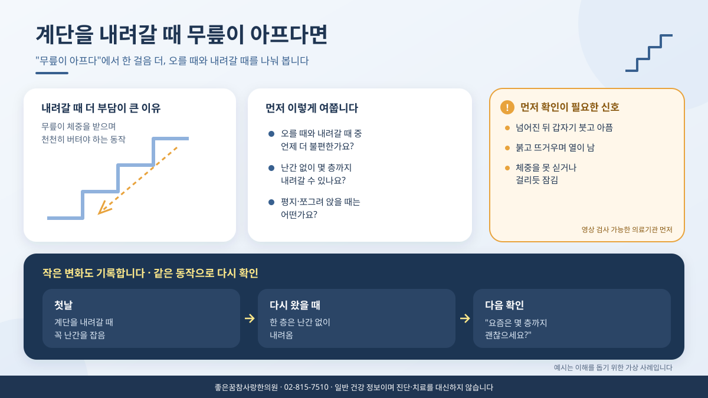
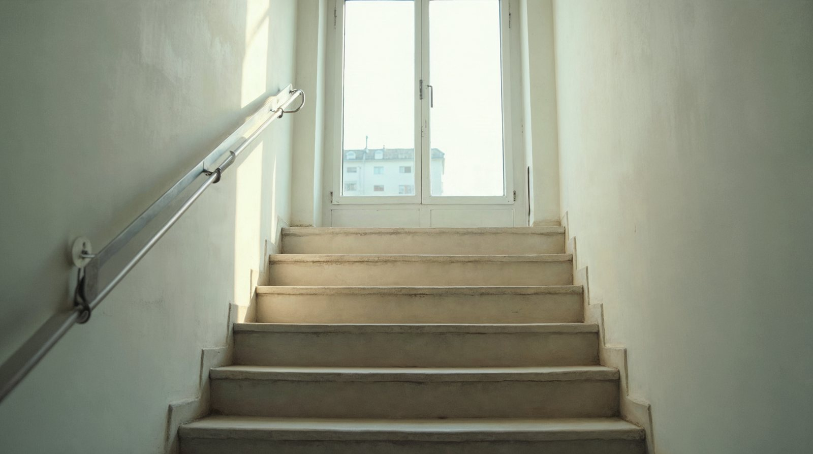

계단을 내려갈 때 무릎이 아프면 통증 부위만이 아니라 어떤 동작에서 얼마나 불편한지를 먼저 묻고, 치료 뒤 같은 동작에서 달라진 점을 기록해 다음 진료에서 이어서 확인합니다.
여쭙는 것
- 계단을 오를 때와 내려갈 때 중 언제 더 불편하신가요?
- 난간을 꼭 잡으시나요? 몇 층까지는 그냥 내려가실 수 있나요?
- 평지를 걸을 때와 쪼그려 앉을 때는 어떤가요?
생활에서 해 볼 것
- 내려갈 때는 난간을 잡고 한 계단씩 천천히, 덜 아픈 다리부터 내딛기
- 엘리베이터가 있는 곳에서는 내려갈 때만이라도 이용해 부담 나누기
- 의자에 앉아 무릎을 펴고 몇 초 버티는 동작으로 허벅지 앞쪽 근육 깨우기
한의원에서 함께 살필 것
- 움직일 때 관절이 뻑뻑하거나 걸을 때 불편이 생기는 경우 관절 주변 근육의 균형과…
- 한쪽으로 쏠린 자세나 반복 동작 뒤 통증이 이어지는 경우 몸의 쏠림과 생활 동작을…
- 날씨나 피로에 따라 통증이 오르내리는 경우 순환과 긴장, 수면 상태를 함께 살핍니다.
먼저 확인이 필요한 신호
- 넘어지거나 부딪힌 뒤 갑자기 아프고 부은 경우
- 무릎이 붉고 뜨거우며 열이 나는 경우
- 체중을 실을 수 없거나 무릎이 걸리듯 잠기는 경우

계단을 내려갈 때 무릎이 아프다면 한의원에서는 "무릎이 아프다"에서 한 걸음 더 들어가, 오를 때와 내려갈 때 중 언제 더 불편한지, 난간 없이 몇 층까지 내려갈 수 있는지를 먼저 여쭙니다. 상도동처럼 언덕과 계단이 많은 동네에서는 이 질문이 일상의 불편을 가장 잘 보여 줍니다. 같은 동작으로 다시 확인하면 작은 변화도 놓치지 않을 수 있습니다.
왜 이런 불편이 생길 수 있나요
- 계단을 내려가는 동작은 무릎이 체중을 받으면서 천천히 버텨야 해서 부담이 크게 느껴지는 동작으로 알려져 있습니다.
- 허벅지 앞쪽 근육이 약해지거나 지쳐 있으면 무릎이 받는 충격을 나눠 주기 어려울 수 있습니다.
- 예전의 부상, 체중 증가, 갑자기 늘어난 활동량이 함께 영향을 주는 경우가 있습니다.
- 원인은 사람마다 달라 통증 위치, 부기, 걷는 모습을 함께 살펴봐야 합니다.
자주 하는 오해
- 무릎이 아프면 계단을 아예 쓰지 말아야 한다고 여기기 쉽지만, 아프지 않은 범위에서 난간을 잡고 천천히 오르내리는 것은 다리 힘을 지키는 데 필요할 수 있습니다.
- 나이가 들면 무릎이 아픈 것은 당연하다고 생각하기 쉽지만, 허벅지 근력과 체중, 걷는 습관처럼 함께 살필 것이 많습니다.
- 무릎만 문제라고 여기기 쉽지만, 고관절과 발목, 걷는 모습이 함께 영향을 주는 경우가 많습니다.
- 아플 때 무릎 보호대만 차면 된다고 생각하기 쉽지만, 오래 의지하면 주변 근육을 덜 쓰게 될 수 있어 쓰는 때를 정하는 편이 좋습니다.

예를 들면 이런 경우입니다
- 예를 들어 상도동 언덕길과 계단으로 매일 장을 보러 다니시는 어르신이라면, 내려올 때만 엘리베이터나 완만한 길을 쓰는 방법과 장바구니 무게를 나누는 방법을 함께 정합니다.
- 예를 들어 등산을 다녀온 다음 날 계단 내려가기가 불편한 50대라면, 내려오는 길의 속도와 스틱 사용, 다음 산행까지의 간격을 이야기합니다.
- 예를 들어 지하철역 계단에서 무릎 앞쪽이 시큰한 직장인이라면, 하루 중 계단을 몇 번 오르내리는지부터 기록해 봅니다.
먼저 이렇게 여쭙니다
- 계단을 오를 때와 내려갈 때 중 언제 더 불편하신가요?
- 난간을 꼭 잡으시나요? 몇 층까지는 그냥 내려가실 수 있나요?
- 평지를 걸을 때와 쪼그려 앉을 때는 어떤가요?
- 언제부터, 어떤 계기 뒤에 불편해졌나요?
이런 질문은 일상 동작을 기준으로 변화를 확인하기 위한 것입니다. "아직 아파요"라는 대답 뒤에 "그래도 한 층은 난간 없이 내려왔어요" 같은 변화가 숨어 있을 수 있기 때문입니다.
스스로 점검해 보세요
- 계단을 오를 때보다 내려갈 때 더 아프다
- 난간을 잡지 않으면 내려가기 어렵다
- 쪼그려 앉았다 일어나기가 불편하다
- 오래 앉았다 일어설 때 무릎이 뻑뻑하다
- 무릎이 붓거나 열감이 있는 날이 있다
- 최근 체중이 늘거나 활동량이 갑자기 늘었다
- 걷는 거리가 예전보다 줄었다
해당하는 것이 많다면 무릎만이 아니라 허벅지 근력과 걷는 습관을 함께 살펴보면 좋습니다. 붓기와 열감이 있다면 먼저 확인이 필요합니다.
일상에서 먼저 해 볼 수 있는 것
- 내려갈 때는 난간을 잡고 한 계단씩 천천히, 덜 아픈 다리부터 내딛기
- 엘리베이터가 있는 곳에서는 내려갈 때만이라도 이용해 부담 나누기
- 의자에 앉아 무릎을 펴고 몇 초 버티는 동작으로 허벅지 앞쪽 근육 깨우기
- 쿠션이 있는 편한 신발 신기
- 통증이 심한 날과 계단을 많이 오르내린 날을 적어 두기
- 장바구니처럼 무거운 짐은 양손에 나누어 들기
한의원에서 함께 살필 수 있는 경우
- 움직일 때 관절이 뻑뻑하거나 걸을 때 불편이 생기는 경우 관절 주변 근육의 균형과 움직임 범위를 함께 살핍니다.
- 한쪽으로 쏠린 자세나 반복 동작 뒤 통증이 이어지는 경우 몸의 쏠림과 생활 동작을 함께 살핍니다.
- 날씨나 피로에 따라 통증이 오르내리는 경우 순환과 긴장, 수면 상태를 함께 살핍니다.
좋은꿈참사랑한의원에서는 불편한 동작과 통증 부위를 듣고 주변까지 넓게 살핀 뒤, 필요하다고 판단될 때 초음파로 확인하고 추나·침·약침·체외충격파 등 상태에 맞는 방법을 이어서 씁니다. 치료 뒤에는 같은 동작에서 달라진 점을 기록하고, 다음 진료에서는 "지난번에 한 층까지 난간 없이 내려가셨는데, 요즘은 어떠세요?"처럼 지난 이야기부터 묻습니다. 반응이 충분하지 않으면 방법을 조정하고, 필요하면 다른 의료기관 진료를 안내합니다.
첫 방문에는 불편한 동작과 통증 부위를 듣고, 무릎과 함께 고관절, 발목, 걷는 모습을 넓게 살피며 압통과 근력, 붓기를 확인합니다. 필요하다고 판단되면 초음파로 무릎 주변 힘줄과 인대 상태를 보고, 추나·침·약침·체외충격파 가운데 오늘 상태에 맞는 것을 골라 이유를 설명해 드립니다.
얼마나 지켜보고, 언제 상담하면 좋을까요
- 생활 조정과 허벅지 근력 운동은 적어도 3~4주는 이어 가며 난간 없이 내려갈 수 있는 층수를 기록해 보세요.
- 한 달이 지나도 계단이 계속 불편하거나 걷는 거리가 줄었다면 상담을 받아 보시길 권합니다.
- 무릎이 갑자기 크게 붓고 열이 나거나, 다친 뒤 체중을 실을 수 없다면 기다리지 말고 병원 진료를 먼저 받으세요.
이렇게 기록해 오시면 상담이 쉬워집니다
- 언제부터 아팠는지와 계기
- 계단에서 불편한 정도(몇 층까지 괜찮은지, 난간을 잡는지)
- 복용 중인 약과 이전에 받은 검사·진료 기록
- 무릎이 붓거나 열감이 있었던 날
- 난간 없이 내려갈 수 있는 층수
- 무릎이 붓거나 열감이 있었던 날
이런 증상은 먼저 확인이 필요합니다
- 넘어지거나 부딪힌 뒤 갑자기 아프고 부은 경우
- 무릎이 붉고 뜨거우며 열이 나는 경우
- 체중을 실을 수 없거나 무릎이 걸리듯 잠기는 경우
- 쉬어도 밤에 계속 아픈 경우
이런 경우에는 영상 검사가 가능한 의료기관에서 먼저 확인하세요. 복용 중인 진통제나 다른 약은 처방한 의사와 상의 없이 줄이거나 끊지 않습니다.
함께 읽으면 좋은 글
- 60대에 걷기 운동을 새로 시작할 때 무릎과 허리는 어떻게 점검하나요?
- 김장 때 바닥에 쪼그려 앉아 일한 뒤 허리와 무릎이 아프면
- 체외충격파는 어떤 진료이고, 어떤 통증에 어떻게 사용하나요?
한눈에 보는 표
| 구분 | 핵심 |
|---|---|
| 여쭙는 것 | 계단을 오를 때와 내려갈 때 중 언제 더 불편하신가요? 난간을 꼭 잡으시나요? 몇 층까지는 그냥 내려가실 수 있나요? |
| 생활에서 해 볼 것 | 내려갈 때는 난간을 잡고 한 계단씩 천천히, 덜 아픈 다리부터 내딛기 엘리베이터가 있는 곳에서는 내려갈 때만이라도 이용해 부담 나누기 |
| 한의원에서 함께 살필 것 | 움직일 때 관절이 뻑뻑하거나 걸을 때 불편이 생기는 경우 관절 주변 근육의 균형과 움직임 범위를 함께 살핍니다. 한쪽으로 쏠린 자세나 반복 동작 뒤 통증이 이어지는 경우 몸의 쏠림과 생활 동작을 함께 살핍니다. |
| 먼저 확인이 필요한 신호 | 넘어지거나 부딪힌 뒤 갑자기 아프고 부은 경우 무릎이 붉고 뜨거우며 열이 나는 경우 |
자주 묻는 질문
무릎이 아프면 모든 환자가 같은 검사를 받나요?
아니요. 말씀해 주신 증상에 따라 필요하다고 판단될 때만 필요한 방법으로 살핍니다.
한 번 치료받으면 바로 계단이 편해지나요?
변화의 정도와 기간은 사람마다 다릅니다. 치료 뒤 달라진 점을 기록하며 반응에 따라 방법을 조정합니다.
무릎이 아프면 계단을 아예 피해야 하나요?
아픈 정도에 따라 다릅니다. 당분간 내려가는 계단을 줄이고 엘리베이터를 함께 쓰며, 어느 정도까지 움직여도 되는지는 진료 때 함께 정합니다.
다시 방문하면 처음부터 다시 설명해야 하나요?
아니요. 지난번 상담 내용을 이어서 여쭙습니다.
무릎이 아플 때 운동은 쉬어야 하나요?
상태에 따라 다릅니다. 무조건 쉬면 근력이 떨어질 수 있어 통증 정도에 맞는 활동 범위를 함께 정합니다.
이 글은 일반적인 건강 정보이며 개인의 진단이나 치료를 대신하지 않습니다. 증상이 있거나 복용 중인 약이 있다면 진료를 통해 확인하세요. 치료 효과는 개인마다 다를 수 있습니다.
작성 기준: 일반적으로 알려져 있는 건강 정보를 참고해 정리했습니다(대표원장 감수). 증상 기록은 1~2주 동안 하루 1회, 비슷한 시간에 적어 오시면 지난 상태와 비교하기 쉽습니다.
좋은꿈참사랑한의원은 재진 때 지난번 이야기부터 이어서 여쭙니다. 진료시간과 예약은 오시는 길에서 확인하세요.